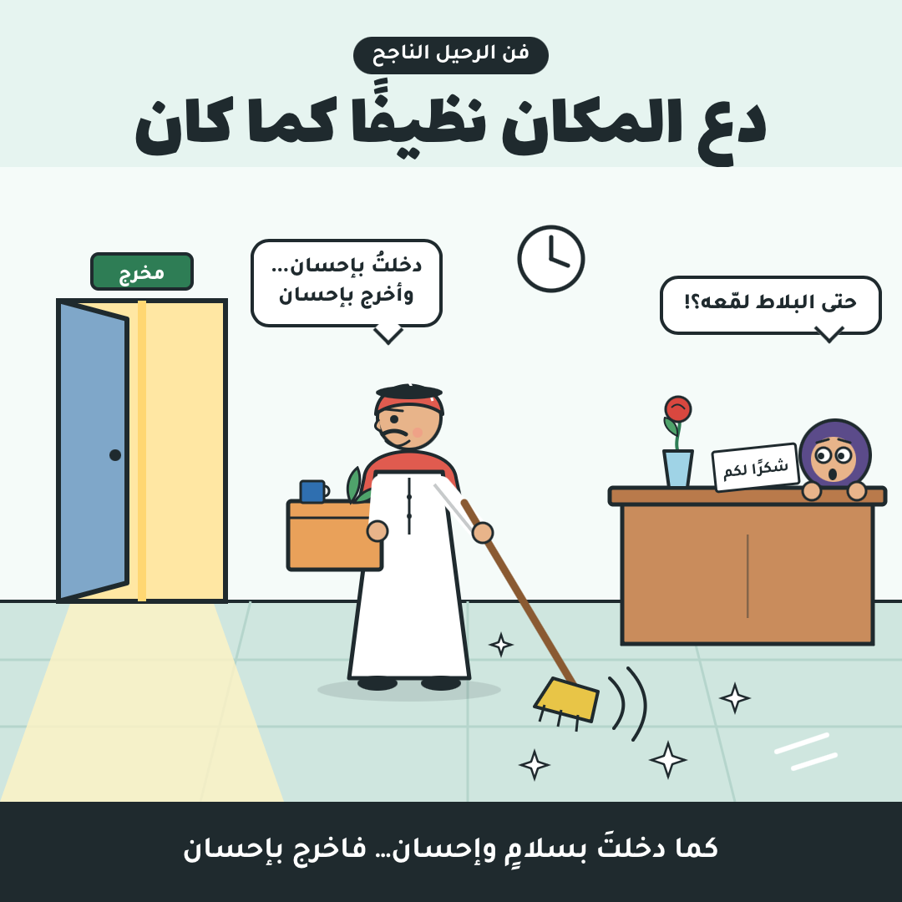

سواءً أكان طلاقًا أم استقالة، عند مغادرة كِيان أو إنسان، فإن هناك فنًا لهذا وأسلوب تعلمته مع الوقت واختبرته فوجدته ناجحًا:
١- دع المكان نظيفًا كما كان
كما دخلت إلى هذا الكيان بسلام وإحسان فأخرج منه بإحسان، بكلمات طيبة ودعوات صادقة.
لماذا عند الخلافات لابد من الغضب وتبادل الشتائم واللعن والسباب؟ في حين أنه يمكنك الرحيل دون أذى ولا إحداث ضوضاء ولا مشكلات.
٢- اترك تبريرًا
أكثر ما ينزعج منه الناس عند الرحيل هو عدم ترك "رسالة أخيرة" تشرح فيها مبرراتك وأسبابك. لا أقول اكتب قصة حياتك!
وإن كنت عزيز نفس فلا أطلب منك سوى كتابة عبارات عامة دون أن تمس التفاصيل.
٣- اترك التزامًا وتمسك به
مثلًا ألتزم بخصوصية البيانات وعدم نشرها حتى بعد مغادرة المؤسسة، أو التزم بتقديم سمعة طيبة بعد تركي المكان. ولا يكن هذا على الورق! بل فعلًا تفعله وتلتزم به.
٤- قدّم هدية
هناك فضل متبادل بينكم، من الجميل أن تترك وردة أو ساعة أو تقدم خدمة ومساعدة عند الرحيل فهذا يترك انطباعًا طيبًا عنك.
—
هذه الخطوات لا تفيد دائمًا مع الجميع، لهذا تضطر إلى المغادرة بصمت ودون كل تلك الخطوات السابقة.
أحيانًا وعند وجود فساد إداري في بعض الشركات تحتاج للإبلاغ وغيرها من إجراءات فالسلام لا يفيد بل أخذ الحق وإن كان بغضب وهجوم على أن يكون آخر الخيارات والبدائل.
—
الرحيل الفاشل:
غالبًا لا يتركون تبريرًا ولا تمهيدًا، ويظنون أنهم يحسنون صنعًا! ويقولون إن كل هاته النصائح دراما تلفزيونية!
بينما هي أسلوب أخلاقي يمكن تطبيقه وواقعي جدًا ولا يكلّف شيئًا!
هذا خير من تركهم لا يعرفون السبب فيحملونها على مئة محمل: ربما غضب من الموقف الفلاني! ربما لأننا عقبناه! فينزغ الشيطان وتتضخم الحبّة.
بينما لما تشرح أن السبب لا علاقة له لا بذا ولا ذاك وإنما أمور أخرى، تطمئن النفوس، وينطفيء فتيل الشيطان بماء الإحسان.
—
ماذا لو عارضوا القرار؟!
في هذه الحالة يمكنك الاستمرار في إجراءات الاستقالة وما تريد بهدوء يمكنك فعلها دون صخب ولا سياط غضب!
—-
الذين رحلوا بهدوء، فرص قبولهم عند الإياب أكثر من الذين أقلعوا بشقاق وسيء أخلاق.
وهناك الذين رحلوا ولم يرحلوا! فهم حتى لما ابتعدوا عنا لا يزالون يرسلون الأذى لنا!
؛
إنني أفضل جدًا وأحترم قرار إنسان بالرحيل إذا ذهب في حال سبيله، هذا خير والله ونعمة من لو كان قريبًا منّي ويؤذيني! وكما قال امرؤ القيس: رضيتُ من الغنيمةِ بالإياب، وهو مثل يُضرب عند الرضا بالسلامة.
والبيت أصله: وقد طَوَّفْتُ في الآفاق حتى ... رضيتُ من الغَنِيمَةِ بالإيابِ (مجمع الأمثال/الميداني)
— شروق المحمادي
💬 تعليقات المسافرين
كن أول من يحلّق ✈️